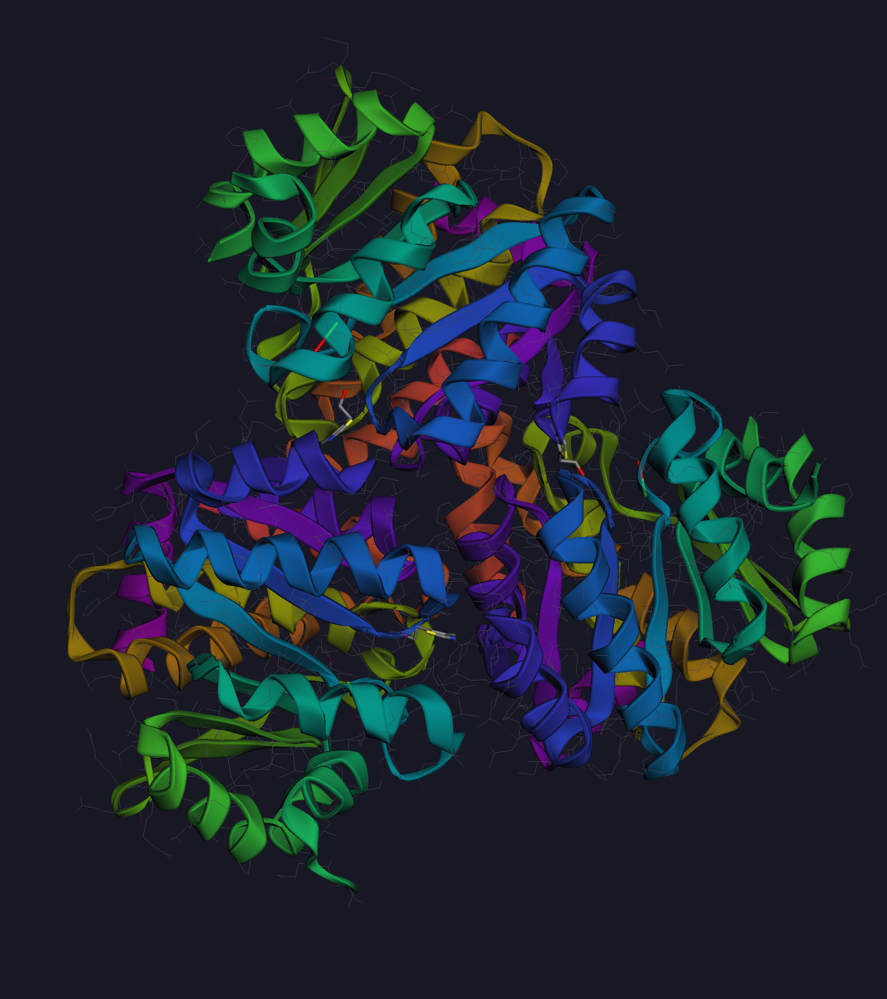

LADOCK Desktop is a modern GUI workstation for molecular docking — supporting AutoDock Vina, AutoDock 4, VinaGPU, and AutoDock-GPU in one unified interface.

From ligand preparation to result analysis — all in a single application.
Run AutoDock Vina, AutoDock 4, VinaGPU, and AutoDock-GPU from one interface without switching tools.
Dock hundreds of ligands in parallel using the built-in job scheduler. Track progress in real-time.
Import from CSV, SDF, or PDBQT. Visualize SMILES structures with RDKit integration.
Powered by 3Dmol.js. Inspect binding poses, receptor surfaces, and interaction contacts interactively.
Automatically detect H-bonds, π-stacking, hydrophobic contacts, and other non-covalent interactions.
Sortable, filterable tables with binding energy scores. Export results to CSV or Excel with one click.
Save and reload complete docking projects with all configurations and results intact.
Runs natively on Windows and Linux. Windows users can access GPU-accelerated Linux tools via the integrated WSL backend — no dual-boot required.
Load your receptor (PDB/PDBQT) and ligand library (SDF, CSV, SMILES). LADOCK handles format conversion automatically using bundled ADFRsuite & OpenBabel.
Set the search box center and dimensions visually, choose your docking engine and parameters. Save configurations as reusable presets.
Launch batch docking with a single click. Monitor job progress, CPU/GPU utilization, and estimated completion time from the built-in job manager.
Explore binding energies in the result table, visualize top poses in the 3D viewer, and inspect non-covalent interaction maps side by side.
LADOCK ships with all the binaries you need, ready to run out of the box.
| Tool | Version | Purpose |
|---|---|---|
| AutoDock Vina | 1.2.7 | Fast, accurate docking engine (CPU) |
| AutoDock 4 | bundled | Classical Lamarckian GA docking |
| ADFRsuite / AGFR | 1.0 | Receptor and ligand preparation |
| MGLTools | bundled | Molecular Graphics Lab tools |
| OpenBabel | bundled | Format conversion (SDF, PDB, PDBQT…) |
External tools (VinaGPU, AutoDock-GPU) can be configured via Settings → Tool Paths.
LADOCK Desktop is free for everyone for non-commercial use until 2030 — no registration needed — and runs on Windows, Linux, and WSL.